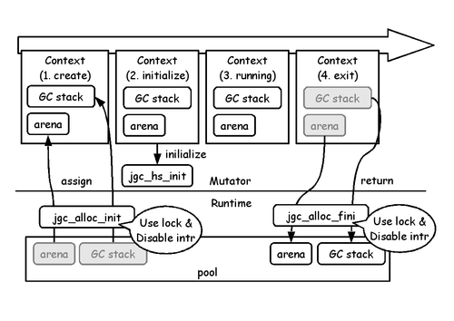

めたせぴ2013☆ゆく年くる年
Table of contents
- 2012年12月
- 2013年1月
- 2013年2月
- 2013年3月
- 2013年4月
- 2013年5月
- 2013年6月
- 2013年7月
- 2013年8月
- 2013年9月
- 2013年10月
- 2013年11月
- 2013年12月
- 2013年まとめ
- 2014年はどんな年？
この記事は Haskell Advent Calendar 2013 - Qiita [キータ] の12/21(土曜)分じゃなイカ。
今年はワシにとって激動の年だったでゲソ。 Metasepiプロジェクトが本格的に稼動して、 Ajhc Haskellコンパイラ という最初の製品を出荷できたでゲソ。 今年一年を振り返って、ついでに来年の願望や妄想をしてみなイカ？ また何をするのにどれぐらい工数がかかったのか覚えておくと後で役に立つかもしれないでゲソ。
2012年12月
去年何をしていたかというとGHCのランタイムの調査をしていたんじゃなイカ。 つまりC83 λカ娘の記事の執筆でゲソ。 この調査の中でワシは組み込みドメインへのGHCの応用に深く絶望したんでゲソ。。。 当時のワシの頭の中には関数型言語と言えばHaskellで、その処理系はGHCしか読んだことがなかったのでゲソ。 型推論を持つ言語のランタイムがGHCの様なありさまでは、POSIXの外に出ることは不可能、、、 と思っていたとき偶然試した Jhc Haskell Compiler がとても小さなランタイムを持つことを知ったのでゲソ。 これはいいじゃなイカ! とC83 λカ娘にはその希望だけにおわせておいたでゲソ。
と、C83 λカ娘の記事が完成したその夜、突然 めたせぴ☆ふぁうんでーしょんの序章 の文章が頭に舞い降りたんでゲソ。
$ pwd
/home/kiwamu/doc/IKMSM/C84
$ git log -p
--snip--
commit 7e43651b93631caa192bb7097126f9ce4735f060
Author: Kiwamu Okabe <kiwamu@debian.or.jp>
Date: Mon Dec 24 18:37:54 2012 +0900
About metasepi.すぐに記事の序章と結末だけ書いて、その間の文章を埋めるべくMetasepiの開発はスタートしたんでゲソ。 まさしくDDD(同人誌 - ドリブン - デベロップメント)じゃなイカ!
やったことリスト
- C84 λカ娘 の原稿作成開始
- jhcのソースコード読み開始
- NetBSD bootloaderの一部をHaskell化できた

2013年1月
ひたすらjhcをコネコネしているとなんとなくソースコードツリー詳細が見えてきたのがこの頃でゲソ。 ドキュメントを全く読まずにこれ以上ソースを読んでも身にならないと気がついて @dif_engineさんに協力してもらって Jhc User’s Manual を日本語訳したでゲソ。 はっきり言ってこのドキュメントはコンパイラの利用者が読むものではなかったでゲソ! 後半にいくと型システムの説明になり、今でもワシは完全には理解できていないでゲソ。。。 この日本語訳は今では Ajhcのホームページの中に置かれている でゲソ。
また、このころ「Haskell言語で少しずつC言語の設計を置換する」という設計手法を思いつくでゲソ。 もちろん、OSの書かれたC言語のソースコードをHaskellで設計置換するのに少しずつでうまくいく訳がないのでゲソ。 最も大きな問題はほとんどのコンパイラがコンパイラの利用者が意図しても再入可能かコードを吐き出せない、つまり割込みハンドラをHaskellによって記述できないからじゃなイカ。 しかしとにかくここではjhcを成長させて再入可能にすることでC言語の設計置換に使えるコンパイラに仕立て上げようということになったのでゲソ。 これ以降、この設計置換の手法を“スナッチ”と呼び、Ajhcを使ったスナッチをNetBSDに対して適用するデザインを“Arafura”と呼ばれることになるでゲソ。 Arafuraを実現するためのjhcの拡張、つまりarafura-jhcという名前にその後変遷することになるでゲソ。
やったことリスト

2013年2月
この頃はフラストーレションがたまっていたでゲソ。 その原因は2つあったでゲソ。 1つ目はMetasepiプロジェクトに関する説明会を開催したはよかったのでゲソが、 その効果はほとんどなかったということでゲソ。 2つ目はjhcの作者であるJohnのメールやpatchに対する反応が悪かったことでゲソ。
しかし、そもそも他人に期待するのは間違っていたのでゲソ。 何に使えるかもわからないコンパイラとOSに興味を持つ訳がないのでゲソ。しかも、ワシの説明は絵空事にしか見えないじゃなイカ。 そこでこの月以降はメモリが数百kB程度しかないマイコンをターゲットにして、デモをひたすら作成することにしたでゲソ。 マイコンをターゲットにする理由はいくつかあるのでゲソが最も大きいかったのが 「他のHaskellコンパイラでは絶対できない実現できない領域に安定した足場を築き、 そこから他の領域に攻撃を仕掛ける」 という短期的な戦略でゲソ。
またこの頃 @dec9ue さんがjhcのGCを調査してくれて、後々楽ができたでゲソ!
やったことリスト

2013年3月
この月、ついに来るべきときが来たでゲソ。 あまりにもJohnの動きが遅いことにイライラしていたワシはjhcをforkすることにしたでゲソ。 [jhc] ANNOUNCE: Start Ajhc project with forking jhc. という挑戦状のようなメールをたたきつけたじゃなイカ。 ただ、後に判明することなのでゲソが、この時Johnが動けなかった理由の一つに会社の法務から個人プロジェクトへ貢献をしらばれていたことがあったようでゲソ。
forkをしてまずはじめにやったことはgithubにリポジトリを作ったことでゲソ。 なにを当たり前なと思うかもしれないでゲソがワシは強いGNU信者なので、 Savannah でリポジトリを管理することを真剣に考えていたでゲソ。 しかしjhcの悪い点の一つに他人とのコラボレーションをしにくい開発体制があるでゲソ。 そこでgithubでのpull requestを受け付けられるようにし、 さらにできるだけカジュアルに見えるホームページをでっちあげたのでゲソ。
Ajhcプロジェクトによってコンパイラ側にも大規模な修正ができるようになったので、 もうすこし凝ったマイコンのデモであるモールス信号のアプリをでっちあげることにしたでゲソ。 このアプリを書く時にAjhcのGCに様々な問題が見つかり、その修正をしたでゲソ。 特に GCの空間効率を最大化するオプション群 を作れたのは収穫だったじゃなイカ。 もっとも、これらのオプションは1MB以下のメモリしか持たないようなアーキティクチャでのみ有効で、 おそらくUNIXモドキkernelでは使わない可能性が高いでゲソが。。。 それでもこれからはIoTの時代らしいので、そんな要求には有効でゲソ!
やったことリスト
- jhcをforkしてAjhcリポジトリを作った
- Ajhc 0.8.0.1, 0.8.0.2 リリース
- Ajhcをcabalで管理しようと思いたつ
- マイコン用モールス信号アプリ作成

2013年4月
cabalを使ってAjhcをインストールできるようにしたでゲソ。 Johnはたいそうcabalが嫌い で(気持ちはわかるでゲソ)、GNU makeで何も問題がないと思っていたようでゲソが、 ワシとしてはAjhcというプロジェクトの宣伝目的のためだけにcabal対応をする価値はあるのではなイカと考えたでゲソ。 githubを使ってカジュアルな開発をするのと同じ理由、つまり参入障壁を下げたかったんじゃなイカ。 本当はAjhc上で使うHaskellライブラリそのものもcabalで管理したかったんでゲソが、 GHCとAjhcでプリミティブの型やbaseライブラリの構造があまりにも異なるため、断念して今にいたるでゲソ。
また、この頃からMetasepiとAjhcを使って生計を立てられないか真剣に考えはじめたでゲソ。 なにしろあまりにもゴールが巨大で遠くにあるため、継続的にフルタイムの工数を投入できないと達成できる気がしなかったからでゲソ。。。 そこで、京都大学に某申請を出したのでゲソが、残念ながら落選してしまったでゲソ。 しかしその時作成した申請書は Metasepiプロジェクトの5ヶ年計画 としてひきつがれることになるでゲソ。 しかもなんとその計画の多くの部分を1年で達成することができたでゲソ。少し申請書の計画の見積りが控え目すぎたんじゃなイカ？
やったことリスト
- Metasepi作戦会議 第2回開催
- Ajhc 0.8.0.3, 0.8.0.4 リリース
- 5ヶ年計画を立てる

2013年5月
Jhc compile pipeline: Grin => C (code example) - Metasepi こんなドキュメントを書きながらコンパイラパイプラインの調査をひたすらやっていた時期でゲソ。 また、Johnが作っていたリグレッションテストを掘りおこして、 Travis-CI上でテストするようにしたのもこのころでゲソ。
やったことリスト
- Travis-CI環境の改善

2013年6月
この月、革新的な機能がAjhcに追加されたでゲソ! それは “再入可能” なバイナリを作成する機能でゲソ。 また、pthreadを使ったスレッドもAjhcにこのころ実装されたでゲソ。 これでAjhcの応用範囲はぐっと広がったじゃなイカ!
やったことリスト

2013年7月
半年の間執筆していたC84 λカ娘 の原稿がついに完成したでゲソ! 書き始めた当初はマイコンボードでHaskellが動作すれば記事ができると思っていたでゲソ。 ところが半年がんばってみたらなんと再入可能ヒープまで作ることができたでゲソ! これはもしかするとご飯作れるんじゃなイカ？と思い翌月から営業に出ることになるでゲソ。
やったことリスト
- C84 λカ娘 の原稿が完成
- ChibiOS/RT上のアプリをHaskellで書いてみようと思いたつ
- Ajhc 0.8.0.7 リリース

2013年8月
NetBSDのエラい人からの入れ知恵で オープンソースカンファレンス2013 Kansai@Kyoto にはじめてMetasepiプロジェクトとして展示してみたでゲソ。 この時にはマイコン上でのデモは安定して動いていたのでその展示をしてAjhcのことをみんなに知ってほしかったんじゃなイカ。
それから@mzpさんからpull requestをもらったでゲソ! たいへん恥しいバグばかりを修正してもらったでゲソが大助かり。 しかも短時間にワシが今まで読んだjhcの知識にあっさり追い付いてくるとは、、、さすがは“なごやこわい”じゃなイカ？
やったことリスト

2013年9月
いくらマイコンとはいえ、Lチカだけのデモでは寂しすぎるので、なにか実用っぽいデモを作ろうと思うじゃなイカ。 ワシとしては猫も杓子もネットワークにむらがっているのが好きになれないのでゲソが、ウケを狙ってTCP/IPプロトコルスタックを使ったデモを作ってみたでゲソ。 reddit.comのRSSを取得してLCDパネルに電光表示するRSSリーダアプリでゲソ。 このデモはmbedマイコンを使って作成したでゲソ。 どーかんがえてもstm32マイコンを使った方が価格優位にあるのでゲソが、mbedの方がブランド力が高いと判断して、ここではmbedを使ってみたでゲソ。 たまたまmbed祭りとオープンソースカンファレンス2013 Hokkaido が同時期に開催されていたので、このデモの展示をしてきたでゲソ。 ARM社のmbedの中の人である Simon Ford にも興味を持ってもらえてよかったでゲソ。 お金にはなりそうもなかったでゲソが。。。
また、この月に裏で作業していたAndroid NDKのサンプルアプリのスナッチが完了したでゲソ。 これでAndroid NDKアプリをHaskellで書く下地ができたじゃなイカ。
やったことリスト
- Metasepi作戦会議 第4回開催
- mbedマイコンを使ったRSSリーダデモ作成完成
- Ajhc 0.8.0.8 リリース
- Android NDKサンプルアプリのスナッチ完了

2013年10月
Android上でHaskellアプリをこねこね書いていたら、タッチパネルで回転できる立方体を表示するアプリ Cube ができたでゲソ。 このアプリをredditに投稿したところ大変良い反応で嬉しかったでゲソ。 もっとも、やっていることは簡単で、マイコン上で再入可能を実現したことの方がはるかに困難で意義深いものだったでゲソ。 しかし、ユーザは見た目の派手さに注目するのだ、ということを再認識できたじゃなイカ。 実装は地味に堅実に、デモは派手に作るのがコツということかもしれないでゲソ。
やったことリスト
- Metasepi作戦会議 第5回開催
- Metasepi作戦会議 第6回開催
- Ajhc 0.8.0.9 リリース
- Android Cubeデモ完成

2013年11月
ChibiOS/RTというRTOS上でHaskellのforkOSスレッドが使えるようになったでゲソ。 もっと前に使えるようになっていたはずなのでゲソが、gitのログからだとどうもこの月のようでゲソ。 Ajhcには-fcustomthreadというコンパイルオプションがあり、このオプションを使うとHaskellスレッドの下まわりのOSスレッドを選択的に実装できるようになっているでゲソ。 その機構がRTOS上でもうまく動作することが実証できたでゲソ。 mbedマイコンのサポートに本腰を入れる時が来たら、この機能を使ってmbed-rtos上にHaskellスレッドを構築することも可能なはずじゃなイカ？
やったことリスト
- Metasepi作戦会議 第7回
- Metasepi作戦会議 第8回
- ChibiOS/RT上でforkOSを使ったスレッドが動作するようになる

2013年12月
C85 λカ娘 の記事を書き上げたでゲソ。 この記事はAndroidを題材にしたスナッチ設計の手引きでゲソ。 これまでAjhcを使って様々なドメインに対してスナッチ設計を試してみていたので、 その手法をワシ以外の人間も使えるように文書にまとめておきたかったのでゲソ。 実はC85の同人誌には別の記事を考えていたのでゲソが、記事を書く工数ではなく実装工数が不足していて無理だったでゲソ。 そのお蔵入りになった記事はC86、、、に掲載できるとうれしいかもでゲソー。
やったことリスト

2013年まとめ
今年AjhcリポジトリにMetasepiプロジェクトとして加えた変更は1.5万行程度だったでゲソ。 コンパイラパイプラインについては5千行。 ランタイムは1.5千行程度変更を加えたでゲソ。
$ pwd
/home/kiwamu/src/ajhc
$ git diff -r d0d55fd5d7de2d642ea921b1c5efeeb6e3aa1d85 | wc -l
14692
$ git diff -r d0d55fd5d7de2d642ea921b1c5efeeb6e3aa1d85 src | wc -l
4624
$ git diff -r d0d55fd5d7de2d642ea921b1c5efeeb6e3aa1d85 rts/rts | wc -l
1401やみくもに変更すれば良いというものではないし、 元にしたjhcがあまりにもメンテナンスされていなかったせいもあるでゲソが、 Haskellコンパイラのド素人にしてはよくやった方なんじゃなイカ？
2014年はどんな年？
現時点でやってみたい/やらなければならないことはイカの通りでゲソ。
- MVarのようなコンテキスト間の状態共有
- ユーザ空間スレッド
- C言語のポインタを局所的に降下するポインタコンビネータ
- GHCでしか使えないライブラリ群の移植
- NetBSD/Linux kernelドライバをHaskellで書いてみる
- Native Clientを使ったブラウザ上実行
- Haskell以外の言語処理系を使ったスナッチ設計 (例:ATS Programming Language)
- よりよいARMマイコンサポート
- よりよいAndroid NDKサポート
- 8bitマイコンに限定的に適用できないか検討
- jhcによる最適化後のバイナリに対するよりよいデバッグ手法
- Haskell+マイコンをIoTビジネスにする
- 速度/空間効率ベンチマーク
- GCの一部だけでもFPGAを使ってハードマクロ化できないか
- 英語論文を書いて研究者に宣伝
- バグなおせ
でも、、、未来のことは誰にもわからないんじゃなイカ？ Metasepiが本格的に立ち上がってまだ一年たらず。 内容はともかくとして、 これからもこの活動を継続できるかどうか、 成果を出し続けられるかどうかが大事なんでゲソ。 どんなに良い技術でも途中で燃え尽きてしまっては 過去の試み と同じ結果が待つのみでゲソ。 あせらず、ゆっくり、確実にやることでゲソー。

blog comments powered by